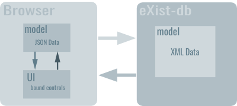
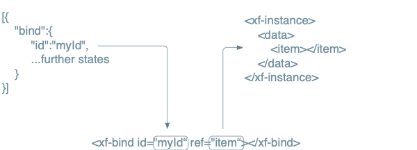

Architecture
Fore is a forms framework specifically built for and with eXist-db.
It distributes form-processing between client and server for maximum security and flexibility.
The browser client talks to eXist-db via AJAX calls. The server will answer with JSON data to inform about value and state changes.
XForms and Fore
The XForms architecture has been designed by clever people more than a decade ago. It has been battle-tested in extremely complex scenarios and there's hardly any other form framework in the world that can compete. However it also employs some complexity and learning-curve that is not easy to master for everyone.
Fore will stay close to the overall XForms architecture and even try to keep element names and attributes whereever it makes sense. We hope to thereby make it easier for experienced XForms users to do the migration to Fore.
The XForms MVC
The following graphic shows the main building blocks 'model', 'UI' and 'actions'. These modules together make up the MVC architecture of XForms.

The model represents the data and it's constraints. The UI binds to the model via the bind elements. Actions can be fired by the UI or the model to change the state of the model which in turn will trigger the UI to update itself.
Client- and Server Data Model
The primary goal of the new forms solution is to edit XML data. However browsers do not well with XML natively (except for XHTML). Furthermore JSON has made the race in the client-side world and the use of XML and XPath has always had a niche-existence at best. It's currently very unlikely that this is going to change.
XPath (and XQuery) are the powertools of XML but they are also not (really) present in the browser. To circumvent these problems and give each side what it deserves we need to introduce some mapping between the worlds.
On the server we deal with data instances which represent XML documents. On the client we'd like to consume some JSON data to render and update our UI. A plain XML to JSON conversion is possible but still leaves us with the problem of resolving path expressions and map those from XPath to e.g. JSONPath. This involves some complexity and potential for errors.
Fore uses the bindings as intermediates between the XML and JSON world. The client only knows about
bind ids and states while the server will translate those to XPathes that point to nodes in XML. The client
gets a JSON representation that mirrors the structure of the xf-bind elements.
The following graphic shows this in more detail.
Distribution of functionality
The folowing table shows roughly how the functionalities of client and server are distributed.
| Client | Server |
|